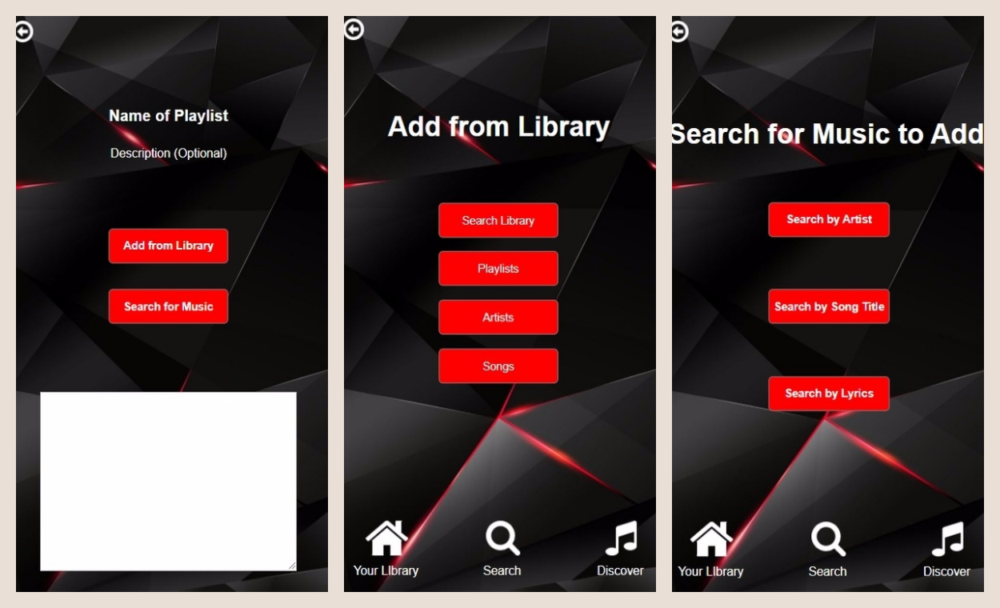

Music Application
The Main Pages:
Creating a Playlist:

What is this?
A music application I designed independently for COGS 187A: Usability & Information Architecture.
The Process
Interviews | Comparisons | Competitive Analysis | Design
I interviewed various people on the music application of their choice. I inquired about the playlists they create,
their favorite things about the application, and any problems they have experienced with it. I found that convenience is a very
large factor in what application people choose to use -- the application that comes with the phone has a definite leg
up. The next biggest factor was the number of features offered. Users particularly enjoyed applications that offered
them everything they could possibly want, allowing a varied musical experience. Small details tended to be a big issue
with users; applications that didn't constantly allow them a way to keep track of what they were doing and undo mistakes
ended up causing frustration.
I compared the three applications that were used among my pool of interviewees. I examined how a user would go about
performing three specific scenarios on each application: creating a playlist, managing a playlist, and searching for
music. The best applications had a conventional and therefore intuitive process that made multiple actions available in
one place.
My competitive analysis compared the navigational structures of the three applications: What categories were listed on the
icon bar? Where did each of those categories lead to? Additionally, I compared the "Genres" offered by each application.
This allowed an interesting analysis of not only what subcategories each application chose to include, but the vocabulary
used in their lists. I found that while all of the applications had clearly labelled sections on their main navigation bar,
the sections thereafter lacked order or consistency, and were sometimes just startlingly random.
I designed my application with the goal of creating something modern and appealing, but also intuitive and easy to get from
section to section and perform or abort actions. The defining design decisions of my project that I put the most thought into
are the icon bar, the usage and placement of back buttons, and the color scheme.
Go Back